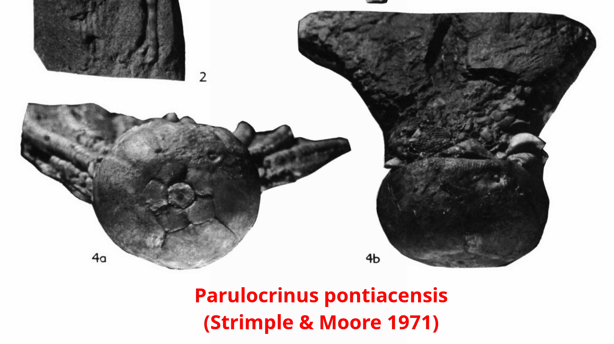
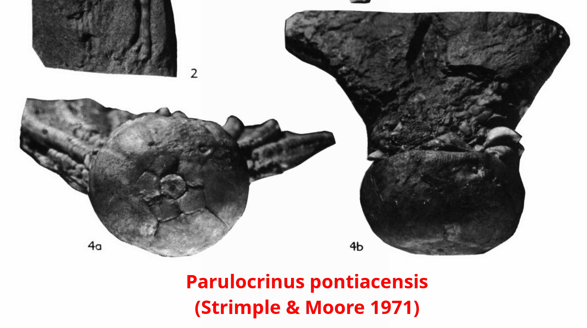

Crinoid
Parulocrinus sp.
• Pennsylvanian
• Ames Limestone, Conemaugh Group
• Meigs County, Ohio, USA
Size: 9.5 cm crown
This is a highly unusual crinoid fossil from Ohio. It appears to be a large cromyocrinid of the genus Parulocrinus considering its flat base, two anal plates, and extra branching in the A, C and D rays, as confirmed by Peter Holterhoff. What really makes this specimen special is its provenance. It comes from an obscure locality known as the Ames Limestone, which is a latest-Pennsylvanian (Virgilian) formation and east of the more typical North American Pennsylvanian crinoid localities. J. J. Burke wrote a series of papers in the 1900s describing various crinoids from the Ames, but to my knowledge no Parulocrinus or similar cromyocrinids were discussed, much less such complete crowns.
A single species of Parulocrinus is known from the Virgilian called Parulocrinus sp. cf. P. blairi (Pabian & Strimple 1985). My specimen appears to have similar plate proportions to this form, but has a completely flat base and moderately-impressed sutures in the calyx, as opposed to a broad, shallow basal concavity and sharp but nonimpressed sutures as in Parulocrinus sp. cf. P. blairi. In addition, there is some uncertainty in the identification of this species, but I personally do not see it being conspecific with P. blairi. The latter has a flat base with no basal concavity, and a large, petaloid infrabasal circlet with a smaller columnar cicatrix (Moore & Plummer 1940).
Some other flat-based forms comparable to my specimen are Parulocrinus pontiacensis which exhibits impressed calyx sutures (Strimple & Moore 1971), and Parulocrinus beedei (Moore & Plummer 1940) which exhibits more similar proportions of the infrabasal plates; both of these are Missourian in age and have not been reported from the Virgilian.


 
